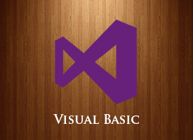
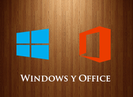
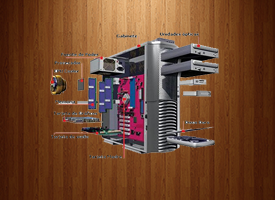
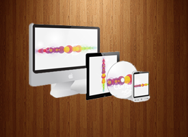

El diseño gráfico es una actividad que se propone comunicar valores/mensajes de forma visual, su origen tiene que ver más que nada con la sociedad industrial y la necesidad de resolver problemas comunicativos, ya sean de difusión (propaganda/publicidad), funcionales (señalética), culturales (libros, revistas), etc.
Administración de Redes
Curso teórico-práctico para ser técnico en administración de redes bajo las plataformas de Linux y Windows 2008 Server. Aprenderá a controlar equipos en red, Gestionar permisos y grupos entre los distintos equipos que forman una red, Controlar cuotas de disco para cada usuario, Control de las bases de datos que se integren en una red.
Programación Visual Basic

Aprenda a diseñar aplicaciones con acceso a bases de datos con el lenguaje de programación visual más popular del mundo. Dirigido a estudiantes de TIC, bachilleres y cualquier persona interesada en incursionar en el mundo de la programacón..
Programacion Web
Al finalizar el curso, los y las estudiantes serán capaces de Aplicar adecuadamente los Conocimientos teóricos y las destrezas prácticas que les permita realizar la programación de una página web en PHP vinculada con bases de datos Mysql, dar soporte a una Sitio web creado en PHP y Mysql segura y fiable, permitiendo la creación, almacenamiento y el intercambio de información en un entorno web, gestionar la seguridad, administrando bases de datos, carpetas públicas y listas de direcciones, administrar protocolos de Internet y la interacción con dispositivos móviles y asegurar el acceso a los recursos de Internet para clientes..
Windows y Office 2010

Brindar al estudiante los conocimientos elementales para el manejo del Sistema Operativo Windows y de las aplicaciones informáticas: Word, Excel, Power Point, Access y Publisher. Dirigido a todo el público en general que desee introducirse el mundo Informático.
Tecnicas para el manejo de caja
Formar personal capacitado para desempeñarse como cajeros, para tener una formación profesional donde tendrá delegadas labores de carácter de caja computacional, dentro de las normas morales y éticas para la profesión, y destacar cuando podría haber un déficit en faltante de dinero.
Reparacion y mantenimiento de PC

El curso de reparación de PC es recomendado para alguien que tiene una base de Operador de PC, es decir sabe un Sistema Operativo. Se explica desde lo básico como desarmar y ensamblar una computadora hasta la intalacion de todos sus programas para asegurar el correcto funcionamiento de la PC. No obstante la reparación de computadoras es un estudio que tiene principio y no tiene fin. Siempre hay nuevas tecnologías, fallas e incompatibilidades.
Asistente Administrativo
Adquirir conocimientos para desempeñarse como asistente administrativo en diferentes organizaciones laborales o sociales y adquirir actitud positiva hacia el desempeño laboral eficiente y de calidad.
Seguridad Informatica
Este curso está dirigido a profesionales de las Tecnologías de la Información, consultores, ingenieros en sistemas y administradores de sistemas y redes en empresas grandes y medianas, responsables de la implementación y el mantenimiento de servidores, implementación de medidas de seguridad informática. Específicamente la gestión e implementación de políticas de seguridad informática en múltiples entornos tanto a nivel de software como de hardware y de logística.
Excel Avanzado
Microsoft Excel es una aplicación distribuida por Microsoft Office para hojas de cálculo. Este programa es desarrollado y distribuido por Microsoft, y es utilizado normalmente en tareas financieras y contable.
Diseño Web

En este curso de Diseño de Páginas Web on-line el alumno aprende a realizar páginas web con ellengyuaje HTML, profundizando en la maquetación y textos, gráficos y elementos multimedia además de adquirir los métodos de trabajo para ahorrar tiempo en los desarrollos manteniendo una calidad profecional.